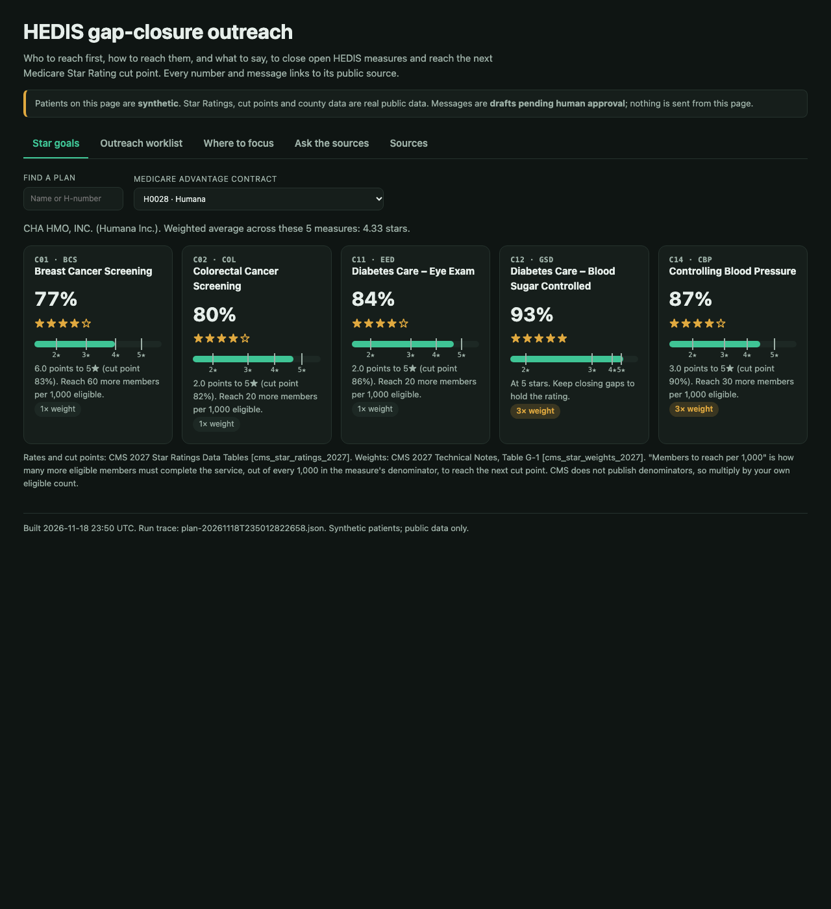

Questions it answers
- Which members move the plan closest to its next Star?
- How do we reach them, given transport, language and broadband barriers?
- What do we say, with evidence, without exposing PHI in a text?
- Which counties need focus first?
The problem
Health plans are rated by CMS from 1 to 5 stars, and the stars drive quality bonus payments. Each measure, such as breast cancer screening or blood-pressure control, has cut points for each star level, and some measures count three times as much as others. A quality team with hundreds of open gaps has to decide who to call first, how to reach people who face real barriers, and what to say without exposing health information in a text message.
How it works
- Public data, snapshotted. CMS 2027 Star Ratings and cut points, CDC PLACES county screening estimates and the CDC/ATSDR Social Vulnerability Index are downloaded once, checksummed and loaded into SQLite.
- Distance to the next star. For a chosen contract, each measure's rate is placed against its cut points, giving how many more members per 1,000 eligible must complete the service.
- Prioritize members. Each open measure scores its Star weight divided by how far the plan is from the next cut point; a member's score sums their open measures.
- Choose the outreach. County barriers (no vehicle, limited English, no broadband) pick the action and channel: mailed test kits, ride help, translated messages.
- Ground the message. Passages are retrieved from a cited knowledge base (CMS Technical Notes, USPSTF, NIH, evidence summaries) with BM25, or optionally a hybrid with vector search. A message with no supporting citation is not written.
- Hold for approval. Every draft is marked pending; nothing is sent from the tool.
Safety, built in and tested
- No PHI in texts. Text messages never name a condition, test or body part, and always include STOP opt-out language.
- Retrieved text is data. Web passages are wrapped as untrusted content and can't change the chosen action; test fixtures with injected instructions prove it.
- Network off by default. A backend switch (mock, snapshot, live) means nothing leaves the machine unless asked.
- Traceable. Every planning run writes a trace of inputs, evidence and outputs, without patient names.
Measures and the evidence behind each outreach
| Measure | Weight | Example outreach (evidence) |
|---|---|---|
| Breast Cancer Screening (BCS) | 1 | Phone reminder that books the visit; ride help or mobile mammography (Ferrari 2025; Mosquera 2023) |
| Colorectal Cancer Screening (COL) | 1 | Mailed at-home stool test kit, then a reminder call (Jager 2019; Rubin 2023) |
| Diabetes Care – Eye Exam (EED) | 1 | Help to schedule; retinal photo in primary care (Zangalli 2016; Wu 2026) |
| Diabetes Care – Blood Sugar Controlled (GSD) | 3 | A1C test plus community health worker support (Evans 2023) |
| Controlling Blood Pressure (CBP) | 3 | Home blood-pressure monitoring with pharmacist follow-up (Acharya 2024; Bryant 2023) |

Limits I'd state up front
- County rates are survey-based estimates, not HEDIS rates from claims: they guide where to focus, not who to contact.
- CMS doesn't publish denominators, so gaps are shown per 1,000 eligible members.
- Messages come from vetted templates: consistent and safe, but less personal.
Tech: Python · pandas · SQLite · rank-bm25 · ChromaDB (optional) · BeautifulSoup · pytest · GitHub Actions